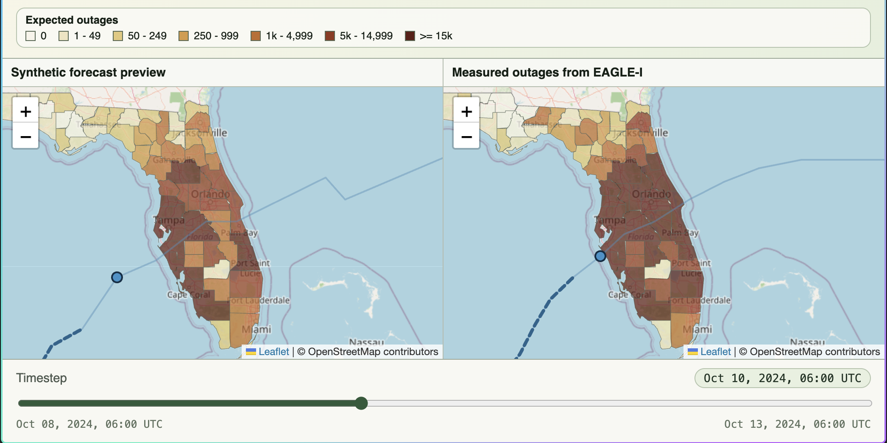

Interactive demoPyTorch · Machine Learning
Microsoft Research
Predicting Outages
From Hurricanes
Comparing predicted county-level power outages given a hurricane path using ML models trained on leakage-free, forecasted and reanalysis datasets with ground truth from EAGLE-I outages.
Completed as part of Microsoft’s Summer Research Program. The full product is Microsoft Confidential. This public demo supports ground truth for Hurricane Milton only, visible predictions are synthetic, and all other selections are null.